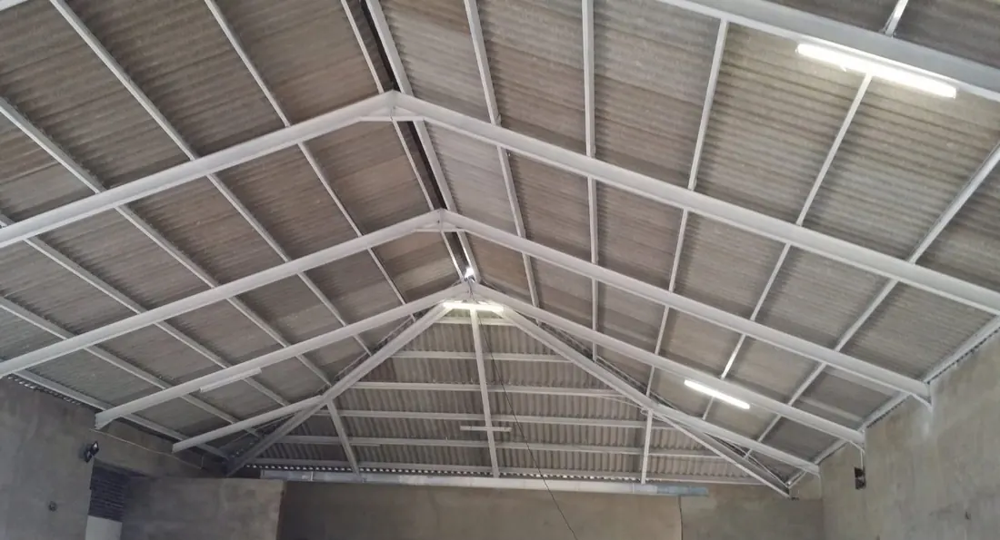
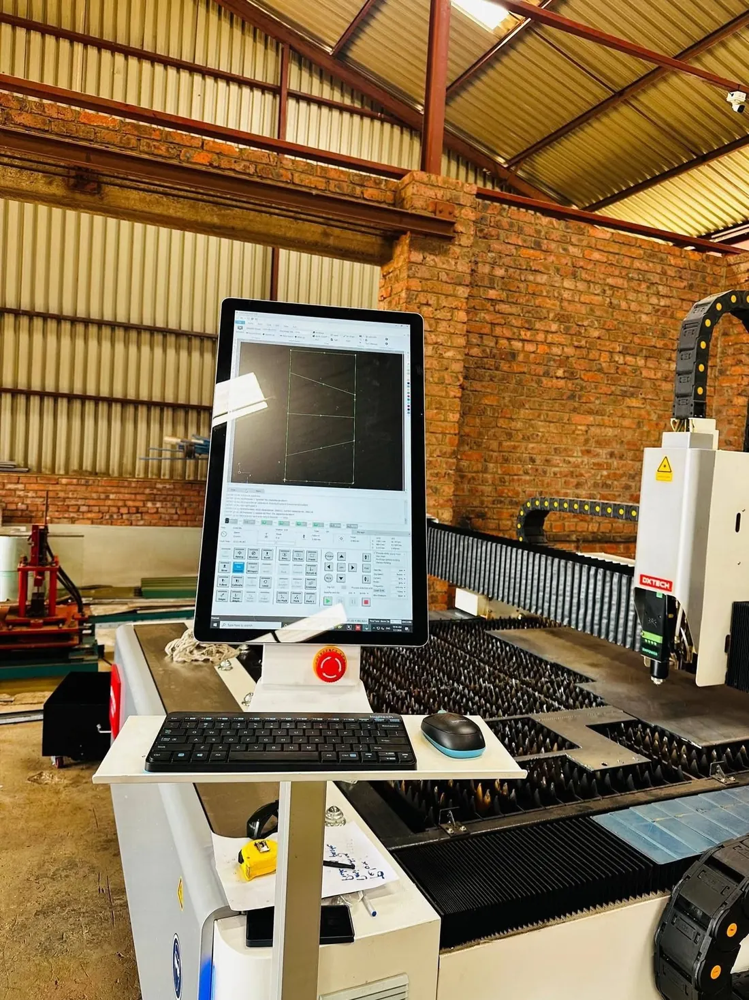
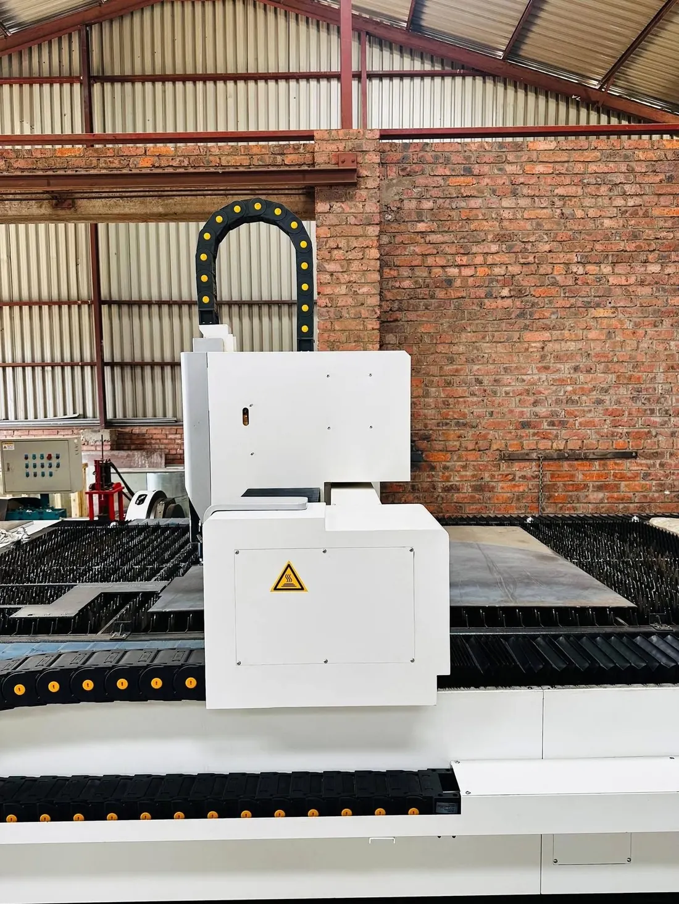
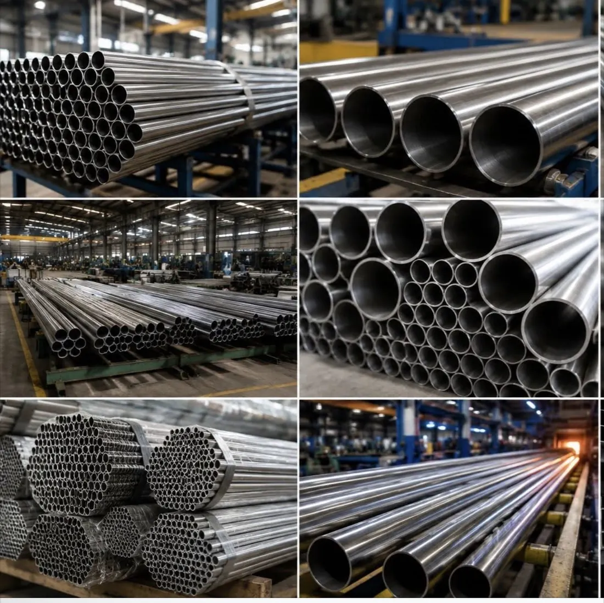

Harare · Zimbabwe
Built in steel. Erected on our own crane.
Structural steel, roof steelwork, laser cutting and lifting — one floor in Harare, one contract, one company accountable for the whole job.
01 — Structural Steelworks
Steel that goes up straight.
Columns, rafters, bracing and purlins fabricated on our floor in Harare, delivered as a marked package, and erected by the same company that made them.
- Portal frames
- Process structures
- Mezzanines
- Erection
Cutting, forming, welding and finishing under one roof in Harare — and the crane that puts the steel up belongs to the same company that made it.

02 — Roof Steelworks
Trusses,
purlins,
sheeting.
SPAN

Fabricated to your span
A roof is not three orders from three suppliers.
Rolled from one coil
Ridge, barge and valley match the roof rather than approximate it.
Cover widths, gauges, minimum roof pitch and purlin spacing are issued in writing with the quotation, against your roof and its exposure.



03 — Precision Laser Cutting
Nothing is committed to steel until you have signed the nest.
A DXTECH fiber laser, installed in our own workshop rather than bought as capacity from somebody else. Your DXF is nested for yield and issued back for approval.
DXTECH fiber laser, installed in the Harare workshop. Material range, thickness and tolerance are confirmed against your drawing when the nest is issued.
We lift
what we build.
We lift what we build.

04 — Mobile Cranage
The crane is ours. Erection is scheduled against our own fabrication programme rather than a hire company's diary.
- Telescopic mobile
- Not subcontracted
- Our own programme
05 — Selected work
The floor, the plant, the work.
Material reference — stock imagery, not Kingson project photography

06 — How we work
-
Enquiry
A call, a WhatsApp, a roof plan, or a photograph of the sketch off the site board. It reaches the same person either way.
-
Scope & drawings
We work out what is actually being asked for — span, profile, access, who is doing what — and come back with the questions before the price.
-
Estimating
A written quotation against a defined scope, so variations are visible rather than discovered.
-
Fabrication
Cut, formed, welded and finished on our own floor in Harare, marked up against the assembly drawings.
-
Delivery & erection
Delivered and, where the contract includes it, erected on our own crane and handed over complete.
No stage promises a date. Programme is agreed against your job and written into the quotation — a shed on a cleared site and a roof over a running plant are not the same piece of work.
07 — Start a project
One conversation,
one accountable quote.
Send a roof plan, a section, a DXF, or a photograph of the sketch off the site board. Whichever you use, it reaches the same person.
Your enquiry is ready to send.
This site cannot send on your behalf. Choose WhatsApp or email below and press send there — the message is already written out.
How we handle what you send us
Who we are. Kingson Trading (Pvt) Ltd, trading as Kingson Engineering, No. 1262 Tynwald Industries, Harare, Zimbabwe.
What we collect. Only what you type above. This site sets no cookies, runs no analytics and does not track you.
Where it goes. This form stores nothing. Pressing send opens WhatsApp or your email with the message written out, and you send it yourself.
Your rights. Ask us what we hold, ask us to correct it, or ask us to delete it — call +263 772 262 869 or email kingsonnkm@gmail.com.
Questions
Kingson Engineering is a steelwork specialist in Harare, Zimbabwe. The company fabricates and erects structural steel, builds and sheets roofs, cuts plate and sheet on an in-house DXTECH fiber laser, fabricates stainless and general steelwork, and lifts with its own mobile crane.
Yes. Steel and sheeting can be supplied for your own contractor, or fabricated, delivered and erected by Kingson as a single contract — including the crane, so the lift is not subcontracted.
Harare and the surrounding industrial areas as standard, with fabrication delivered and erected elsewhere in Zimbabwe. Transport is priced per load in the quotation.
DXF or DWG at 1:1 with closed polylines is ideal. STEP files are accepted, and PDF or hand-dimensioned drawings are redrawn in-house and returned for approval before anything is cut.
Always. The nest layout, the sheet count and the price are issued for written approval, and a first-off part is measured against the drawing before the balance of the nest runs.
Call or WhatsApp +263 772 262 869, email kingsonnkm@gmail.com, or use the form on this page. Send drawings if you have them.